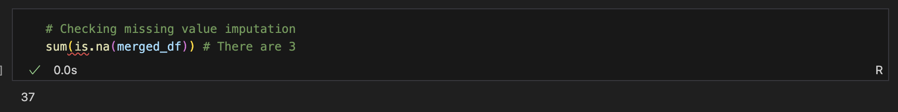
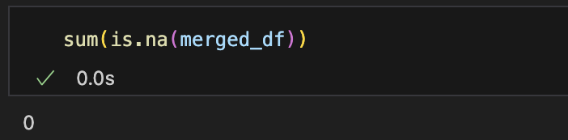
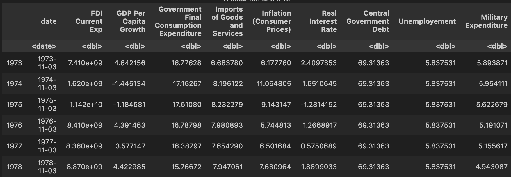
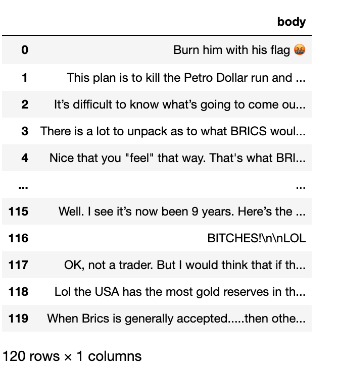
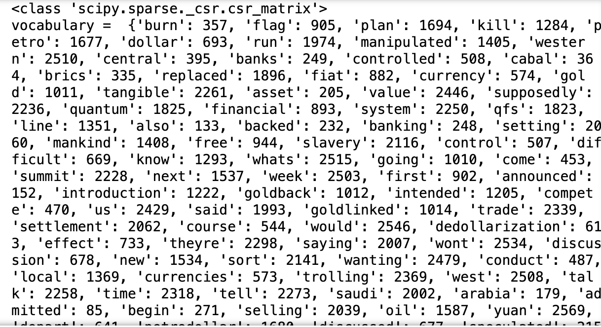
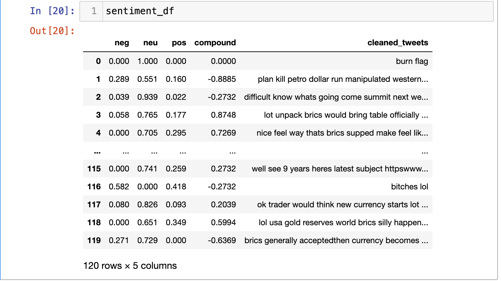

The cleaning of both textual and quantitative as no simple solution as each dataset has to be treated separately. Hence, the data will be tackled separately.
Quantitative Data
For the quantitative data, the way you clean is completely dependent on the nature of the text. Sometimes, cleaning can take a very small period of time and sometimes, it can get a bit too much. As a data scientist, caution has to be taken to ensure each dataset is handled separately. Using the Python and R API, since we have pulled in the US data, this is show it looks.
Python API
For the Python API, where the data had been retrieved from FREDAPI, there was not a lot of cleaning that was required. After merging the data, there was one missing value that was imputed using the Mean Value Imputation. While the MVA is not a recommended method for dealing with missing values, and usually for economic data, missing values are not imputed for the data as it combats the purpose of analysis. If our main gist is to analyse the data and their trends across the nations, the imputing could give us biased estimates. Yet, since the amount of missing values are really less, MVA seems like a better option.
from fredapi import Fredimport pandas as pdfred = Fred(api_key='10fbe66f8f62ad7f44097cca867bf01f')series_id_1 ='GDP'# for GDP USseries_id_2='GDPC1'# for Real Gross GDPseries_id_3='W207RC1Q156SBEA'# Adjusted Saving (% of GNI)series_id_4='USAB6BLTT02STSAQ'# Current account balance (% of GDP)series_id_5='A019RE1Q156NBEA'# Export of Goods and Services as percentage of GDPseries_id_6='MKTGNIUSA646NWDB'# GNI# Set the start and end dates where I need data from 1990 to 2023start_date ='1973'end_date ='2023'# Fetch the datagdp_u = fred.get_series(series_id_1, start_date, end_date)realgdp_u = fred.get_series(series_id_2, start_date, end_date)adjsavings_u = fred.get_series(series_id_3, start_date, end_date)currentaccbalance_u = fred.get_series(series_id_4, start_date, end_date)exportsofgoods_u = fred.get_series(series_id_5, start_date, end_date)gni_u= fred.get_series(series_id_6, start_date, end_date)# for GDPdf1= gdp_u.to_frame(name=('GDP'))annual_gdp_u = df1.resample('A').mean()annual_gdp_u['Year'] = annual_gdp_u.index.yearannual_gdp_u=annual_gdp_u[['Year', 'GDP']]annual_gdp_u.reset_index(drop=True, inplace=True)print(annual_gdp_u.head(5))# Real GDPdf2= realgdp_u.to_frame(name=('Real GDP'))annual_realgdp_u = df2.resample('A').mean()annual_realgdp_u['Year'] = annual_realgdp_u.index.yearannual_realgdp_u.reset_index(drop=True, inplace=True)annual_realgdp_u.head(16)# Adjusted Savingsdf3= adjsavings_u.to_frame(name=('Adjusted Savings'))annual_adjsavings_u = df3.resample('A').mean()annual_adjsavings_u['Year'] = annual_adjsavings_u.index.yearannual_adjsavings_u.reset_index(drop=True, inplace=True)annual_adjsavings_u.head(2)# Current Account Balance % of GDPdf4= currentaccbalance_u.to_frame(name=('Current Account Balance'))annual_currentaccbalance_u = df4.resample('A').mean()annual_currentaccbalance_u['Year'] = annual_currentaccbalance_u.index.yearannual_currentaccbalance_u.reset_index(drop=True, inplace=True)annual_currentaccbalance_u.head(2)# Current Account Balance % of GDPdf5= exportsofgoods_u.to_frame(name=('Exports of Goods and Services'))annual_exportsofgoods_u = df5.resample('A').mean()annual_exportsofgoods_u['Year'] = annual_exportsofgoods_u.index.yearannual_exportsofgoods_u.reset_index(drop=True, inplace=True)annual_exportsofgoods_u.head(2)# GNIdf6= gni_u.to_frame(name=('GNI'))annual_gni_u = df6.resample('A').mean()annual_gni_u['Year'] = annual_gni_u.index.yearannual_gni_u.reset_index(drop=True, inplace=True)annual_gni_u.head(10)merged_df= pd.merge(annual_gdp_u, annual_realgdp_u, how='outer', on='Year' )merged_df= pd.merge(merged_df, annual_adjsavings_u, how='outer', on='Year')merged_df= pd.merge(merged_df, annual_currentaccbalance_u, how='outer', on='Year' )merged_df= pd.merge(merged_df, annual_exportsofgoods_u, how='outer', on='Year' )merged_df= pd.merge(merged_df, annual_gni_u, how='outer', on='Year' )
Year GDP
0 1973 1425.3760
1 1974 1545.2425
2 1975 1684.9050
3 1976 1873.4125
4 1977 2081.8250
Year 0
GDP 0
Real GDP 0
Adjusted Savings 0
Current Account Balance 0
Exports of Goods and Services 0
GNI 0
dtype: int64
merged_df.head(10)
Year
GDP
Real GDP
Adjusted Savings
Current Account Balance
Exports of Goods and Services
GNI
0
1973
1425.37600
6106.37050
10.925
0.492313
0.275
1.431848e+12
1
1974
1545.24250
6073.36275
9.200
0.129574
-0.050
1.553300e+12
2
1975
1684.90500
6060.87525
6.500
1.075657
0.950
1.684554e+12
3
1976
1873.41250
6387.43650
7.450
0.233895
-0.050
1.869603e+12
4
1977
2081.82500
6682.80450
8.125
-0.683540
-1.125
2.082670e+12
5
1978
2351.59875
7052.71125
9.375
-0.661201
-1.125
2.349856e+12
6
1979
2627.32625
7275.99925
9.200
-0.012445
-0.875
2.614202e+12
7
1980
2857.30850
7257.31650
7.050
0.073883
-0.450
2.847055e+12
8
1981
3207.04125
7441.48500
8.000
0.156610
-0.375
3.201886e+12
9
1982
3343.78925
7307.31400
5.625
-0.161860
-0.600
3.371448e+12
R API
For the R API, a similar aspect is seen. When a set of macroeconomic and fiscal variables have been pulled from python, few were also pulled from R using the ‘wbstats’ API.
Similar to the Python API, the data retrieved from here also didn’t have a lot of data cleaning steps.

Here you can see the amount of missing values wherein, we similarly cleaned it through missing value imputation through mean.
# Using mean value imputation
for (x in names(merged_df)) {
mean <- mean(merged_df[[x], na.rm = TRUE) # Calculate column mean ignoring NA
merged_df[[x]][is.na(merged_df[[x]])] <- mean # Replace NA with column mean
}
Here is no missing of the data

The final representation of the data

Textual Data
Python API
For the textual data, the python wrapper of PRAW has been used. This is how the output looks

This was used to clean and vectorise the data.
import string
import re
from nltk.corpus import stopwords
import nltk
from nltk.stem import WordNetLemmatizer
#nltk.download('punkt')
#nltk.download('stopwords')
def clean_string(text):
# lowercase the text
text = text.lower()
# replace with regular quotations, added this since there were few texts that weren't cleaned
text = text.replace('’', "'")
# remove emojis, saw a list of them online so just added them.
emoji_pattern = re.compile("["
u"\U0001F600-\U0001F64F" # emoticons
u"\U0001F300-\U0001F5FF" # symbols & pictographs
u"\U0001F680-\U0001F6FF" # transport & map symbols
u"\U0001F700-\U0001F77F" # alchemical symbols
u"\U0001F780-\U0001F7FF" # Geometric Shapes Extended
u"\U0001F800-\U0001F8FF" # Supplemental Arrows-C
u"\U0001F900-\U0001F9FF" # Supplemental Symbols and Pictographs
u"\U0001FA00-\U0001FA6F" # Chess Symbols
u"\U0001FA70-\U0001FAFF" # Symbols and Pictographs Extended-A
u"\U0001F004-\U0001F0CF" # Miscellaneous Symbols and Pictographs
u"\U0001F0D0-\U0001F0FF" # Emoticons
u"\U0001F1E0-\U0001F1FF" # Regional Indicator Symbols
u"\U0001F200-\U0001F251" # Enclosed Ideographic Supplement
"]+", flags=re.UNICODE)
text = emoji_pattern.sub(r'', text) # Remove emojis
# line breaks removal
text = text.replace('\n', ' ')
# punctuation removal
text = ''.join([char for char in text if char not in string.punctuation])
# tokenize the text
words = nltk.word_tokenize(text)
# remove stopwords
words = [word for word in words if word not in stopwords.words('english')]
# rejoin the words into a cleaned string
cleaned_text = ' '.join(words)
return cleaned_text
We then vectorise the data using the ‘CountVectoriser’ from sklearn
from sklearn.feature_extraction.text import CountVectorizer
vectorizer = CountVectorizer()
value = [str(element) for element in df2]
vectorizer=CountVectorizer()
Xs = vectorizer.fit_transform(value)
print(type(Xs))
print("vocabulary = ",vectorizer.vocabulary_)
print("stop words =", vectorizer.stop_words)
col_names=vectorizer.get_feature_names_out()
print("col_names=",col_names)
This is how the actual output looks like

In addition to that, since we are also looking for perform Naive Bayes next, which is often used for categorical data, we use the SIA, or the Sentiment Intensity Analyser from the NLTK that automatically calculates the polarity scores on basis of the tweets. This is required as the data I retrieved didn’t have any labels to it. This seemed like the best option.
sia = SIA()
results = []
for tweet in df['cleaned_tweets']:
polarity = sia.polarity_scores(tweet)
polarity['cleaned_tweets'] = tweet cores
results.append(polarity)
sentiment_df = pd.DataFrame(results)
pprint(sentiment_df.head())

Record Data
For the record data, using the world bank data bank, the data was retrieved. There is a lot of cleaning that was supposed to be done. The entire data as seen under data_gathering section was transposed and had 152 columns. I had to individually transpose.
import pandas as pdimport matplotlib.pyplot as pltimport numpy as np#pip install xlrddf=pd.read_excel('../data/india.xlsx')